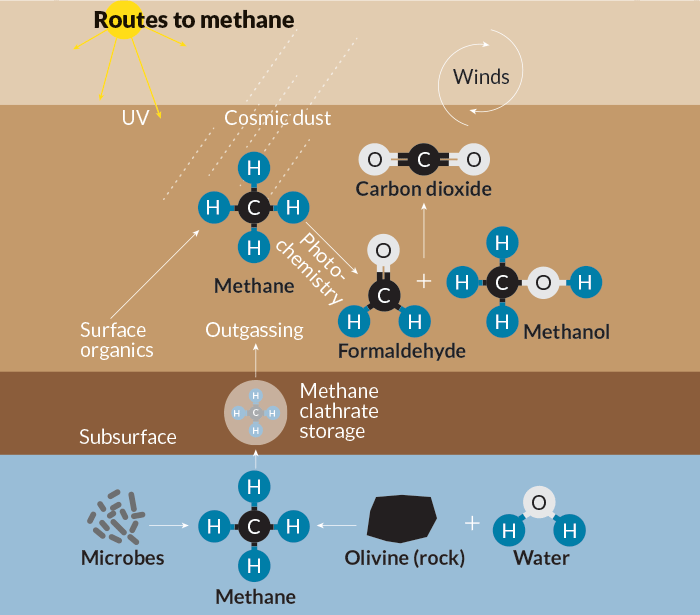

The six-wheeled Curiosity rover is NASA’s rock star. Since August 2012, when it landed in Gale Crater on Mars, it has been spending its days (or “sols” on Mars) hunting for environments where past life might have thrived. It has traveled about 10 kilometers, drilled into six rocks, analyzed three scoops of dirt and revealed the watery history of its landing site. As Curiosity begins to climb a mountain for some vertical geologizing, Science News imagined key entries from the rover’s personal diary, logged as the 1-ton machine made its way across the Martian landscape. Each excerpt opens with a tweet actually posted by NASA on Curiosity’s behalf at the Twitter name @MarsCuriosity.
The Martian Diaries
Curiosity has explored Mars for over two and a half years. What if the rover kept a scrapbook?
August 5, 2012 | Touchdown
I'm safely on the surface of Mars. GALE CRATER I AM IN YOU!!! #MSL
— Curiosity Rover (@MarsCuriosity) August 6, 2012Bradbury Landing
Everyone was worried about those seven minutes that I hurtled through the thin Martian atmosphere, with a rocket-powered “sky crane” slowing my descent. I have to admit it was pretty scary, dangling beneath four fiery engines. But I landed intact at my destination, a spot within Gale Crater named after science fiction writer Ray Bradbury. My job here is to compile my own Martian chronicles, from the stories hidden in the rocks and the dirt. But first, a nap.
Curiosity captured its descent to the Red Planet on August 5, 2012. Meanwhile, engineers and scientists at the Jet Propulsion Laboratory monitored signals of the major milestones.
Credit: JPL-Caltech/NASA, MSSS
-
NASA’s Mars Reconnaissance Orbiter caught a glimpse of Curiosity parachuting down to Mars about a minute before the rover landed.
Credit: JPL-Caltech/NASA, Univ. of Arizona
-
NASA’s Mars Reconnaissance Orbiter caught a glimpse of Curiosity parachuting down to Mars about a minute before the rover landed.
Credit: JPL-Caltech/NASA, Univ. of Arizona
-
NASA’s Mars Reconnaissance Orbiter caught a glimpse of Curiosity parachuting down to Mars about a minute before the rover landed.
Credit: JPL-Caltech/NASA, Univ. of Arizona
-
NASA’s Mars Reconnaissance Orbiter caught a glimpse of Curiosity parachuting down to Mars about a minute before the rover landed.
Credit: JPL-Caltech/NASA, Univ. of Arizona
August 22, 2012 | Sol 16
1st drive complete! This is how I roll: forward 3 meters, 90º turn, then back. Electric slide, anyone? [pic] http://t.co/bqydbjvs
— Curiosity Rover (@MarsCuriosity) August 22, 2012Bradbury Landing
I’ve got a 10-kilometer road trip in front of me. My ultimate goal is a peak called Mount Sharp, which is so tall and rough that my engineers couldn’t land me there. Instead, I’ve got to drive myself to its base. First, though, I’m going to check out some interesting geology off to the east. True, it’s in the opposite direction of Mount Sharp. But it’s more about the journey than the destination, right?
Mount Sharp sits at the center of Gale Crater, which is about the size of Connecticut and Rhode Island combined.
Credit:JPL-Caltech/NASA, ESA, DLR, FU Berlin, MSSS; adapted by E. Otwell
October 7, 2012 | Sol 61
Today's wake up song: "Digging in the Dirt" by Peter Gabriel. Because no song says "Digging in the Regolith." <sigh>
— Curiosity Rover (@MarsCuriosity) October 7, 2012Rocknest
Pay dirt! I’ve used my robotic arm to take my first scoop of Martian soil, from a dune called Rocknest. I dump it into my onboard laboratory called the Sample Analysis at Mars to run some Red Planet science. SAM heats up the dirt and measures water coming out. I found small amounts of water, about 1.5 to 3 percent, bound within the minerals that make up Martian soil. If astronauts ever decide to join me here, they might be able to extract some of that water to drink or to make rocket fuel to help them get home again.
Mount Sharp sits at the center of Gale Crater, which is about the size of Connecticut and Rhode Island combined.
Credit:JPL-Caltech/NASA, ESA, DLR, FU Berlin, MSSS; adapted by E. Otwell
November 16, 2012 | Sol 100
I'm taking radiation readings to help future human explorers & detected elusive whirlwinds on Mars [video] http://t.co/IDTTmVOe
— Curiosity Rover (@MarsCuriosity) November 16, 2012Yellowknife Bay
On Earth, a strong magnetic field and a thick atmosphere help protect life from radiation blazing from the sun and the rest of the universe. No such luck on Mars. My radiation counter has clocked enough doses to calculate that astronauts flying from Earth to Mars and back, with a 500-day stay here, would get zapped with enough radiation to increase their chances of developing fatal cancer by about 5 percent. Radiation doesn’t bother me, but I’d be sad if visiting me made people sick.
February 9, 2013 | Sol 182
The real deal! First drilling on Mars to collect a sample for SCIENCE is a success. http://t.co/MvnQSH7j http://t.co/Ld2EWS0k
— Curiosity Rover (@MarsCuriosity) February 9, 2013John Klein
Forget dirt: I’m the first to drill into a Mars rock! My grinding instrument has hollowed out a hole about 6.4 centimeters deep within a rock called John Klein. I’ve dumped the powdered rock into my laboratory instruments, which tell me that at least 20 percent of it is made of clay minerals. Clay forms when water interacts with sediment, so water must have once flowed here. It would have been tasty water too, neither acid nor alkaline. (My friend the Opportunity rover, strolling the other side of the planet, has found similar evidence that water once flowed at her landing site in Meridiani Planum.)


May 30, 2013 | Sol 289
Rollin' on the River: Call me Proud Curi. Rounded rocks I found help confirm stream on ancient Mars. http://t.co/QTh4rJpsFu
— Curiosity Rover (@MarsCuriosity) May 30, 2013Yellowknife Bay
I’ve looked at enough rocks by now to confirm my early hunch: I’ve been exploring an ancient streambed. Three flat rocks I’ve photographed all contain rounded pebbles, like those at the bottom of rivers on Earth. From what I can tell, the ancient Martian stream had water about waist-deep flowing at walking speed. Not my idea of fun, but could’ve been a nice place for humans to visit on a hot day.

September 23, 2013 | Sol 402
Mars' relationship with water? It's complicated. My team is piecing together the long-term history: http://t.co/xCrzB3cG3U
— Curiosity Rover (@MarsCuriosity) September 24, 2013Darwin
I’ve finally started my long trek toward Mount Sharp, stopping to do some cool science along the way. Here at an outcrop called Darwin, I’ve been studying another pebbly rock. Its mineral veins, laid down in long-ago water, are different from those I found near my first drill site. That suggests Gale Crater has a complex watery history. Rivers appeared, then dried up, then others took their place. Glad I’m here to bear witness.

November 8, 2013 | Sol 447
So, that happened. Had a warm reset yestersol. I'm healthy. Spending the weekend awaiting new instructions. http://t.co/RME6ADB9ml
— Curiosity Rover (@MarsCuriosity) November 9, 2013Cooperstown
My software can be as glitchy as Windows 8. My computer unexpectedly reset itself, just as I was sending data to another spacecraft to be beamed to Earth. Earlier this year, engineers temporarily switched to my backup computer because of a memory problem I was having. It’s all part of the risk of having your IT department on another planet.
December 5, 2013 | Sol 473
#PewPew #PewPewPew I've fired my ChemCam laser 100,000+ times on Mars for SCIENCE! http://t.co/yA5j5OQ8ut pic.twitter.com/jGiOMdruWY
— Curiosity Rover (@MarsCuriosity) December 5, 2013Cooperstown
I don’t just drill rocks — I blast them as well. My ChemCam laser zaps the surface with more than a million watts of power, turning rock or soil into glowing, electrically charged gas. I analyze the light to read its chemical elements. Call me a perfectionist. I usually blast each spot 30 times with the laser to repeat the measurements and make sure I’m correct. ChemCam has worked so well that NASA plans to launch an upgraded version on another Mars rover in 2020, which is being built based on my design. A mini-me.


December 9, 2013 | Sol 477
Land O'Lake: I found evidence for an ancient freshwater lake on Mars. Details: http://t.co/Ide83zfOgZ pic.twitter.com/FvcOC1Drom
— Curiosity Rover (@MarsCuriosity) December 9, 2013Beyond Cooperstown
At a meeting on Earth, my scientists are reporting a bunch of results from my Yellowknife Bay studies. By comparing John Klein to other rocks, they found that not only did freshwater flow in streams across the surface, it probably also ponded up as a huge lake. I’m glad I don’t have to try swimming across something like that.
Another rock I drilled, called Cumberland, turns out to date between 3.86 billion and 4.56 billion years old. This is about the range scientists were expecting, but it’s the first time anyone has managed to measure the exposure age of a rock on the surface of another planet. Another first for me. I did it by measuring how much potassium was in the rock compared with argon, which it radioactively decays to over time.

this is a caption
December 20, 2013 | Sol 488
Taking stock this holiday season. I'm planning smoother paths for the new year. http://t.co/rTt1YChU71 pic.twitter.com/roCaCLTje3
— Curiosity Rover (@MarsCuriosity) December 20, 2013On the road to Mount Sharp
These shoes are killing me! My wheels are made of aluminum, and my engineers made them thin so I wouldn’t weigh too much to launch. But maybe, at just 0.75 millimeters thick, they are not quite tough enough: Sharp rocks have been punching holes in them. And there’s no AAA on Mars to bring me a spare. Back at the Jet Propulsion Laboratory in California, my engineers are working with a replica of me to fix the problem. They drive the test rover over different kinds of rocks and soil to identify the types of terrain that would be gentlest on my torn-up wheels. I hope they figure it out soon.
June 17, 2014 | Sol 662
Two paths diverged on a Red Planet, and I, I took the south one, and that has made all the difference. pic.twitter.com/QWJ42jxhMi
— Curiosity Rover (@MarsCuriosity) June 17, 2014Robert Frost Pass
Figuring out where to travel is a negotiation between my engineers and me. They plot the general direction they want me to go, then make short-term decisions, based on my feedback, about the best way to get there. For now, we have decided to take a southwestern, sandy path to avoid the hard terrain that was beating up my wheels. Sometimes, they let me drive. I have an autonomous navigation mode where I take several sets of stereo images, and my software figures out if there are any hazards like big rocks in front of me. In auto-nav, I can move around all on my own. Zoom, zoom!
June 24, 2014 | Sol 669
How do I take #selfies? I take many frames & my team stitches them together: https://t.co/OdYDRU3Zau
— Curiosity Rover (@MarsCuriosity) June 24, 2014Moosilauke Basin
I may not have an iPhone, but I can snap plenty of good shots. One of my cameras is attached to a mast on my back, and I use it to survey my surroundings. Another camera is on my robotic arm so that I can move it up close to what I want to photograph. It’s kind of like my very own selfie stick: I can extend my arm and snap many different shots of myself, which mission controllers combine to create a single selfie.
July 15, 2014 | Sol 689
Heavy Metal! I found an iron meteorite on Mars http://t.co/S2cIgBHBlY \m/
Note: ChemCam pics = outlined pic.twitter.com/sxKweKsBCg
— Curiosity Rover (@MarsCuriosity) July 15, 2014Zabriskie Plateau
It’s been a long, hard slog to Mount Sharp, but at least I’m finding some interesting rocks along the way. One, called Lebanon, is an impressive 2 meters long, shiny and black. I found it on my way here. On Earth, iron meteorites are not as common as stony ones, but Mars seems to have a lot of the iron kind. That may be because iron-rich meteorites are tough enough to withstand the powerful sun, strong winds and other forces on Mars that break other rocks apart.
August 6, 2014 | Sol 711
Smooth roving ahead. I'm navigating a softer trek of sandy valleys on the way to Mount Sharp [rover report] http://t.co/OEwzQxXJ7f
— Curiosity Rover (@MarsCuriosity) August 6, 2014Hidden Valley
As I make my way forward, sand is both a blessing and a curse. It doesn’t shred my wheels like the sharp rocks do, but when the sand is too soft I come close to getting stuck. I thought this sand-filled valley would be a safe passage, but I was wrong. I’m going to turn around to find another route.
September 11, 2014 | Sol 746
Made it! After 2 yrs of driving over some pretty tough terrain, I'm at the base of Mount Sharp. http://t.co/OVdYuKLt1w
— Curiosity Rover (@MarsCuriosity) September 11, 2014Jubilee Pass
I am so happy to be here. Mount Sharp is impressive. I can see layers of rock rising in undulating swales ahead. My scientists think these layers were laid down as sediments at the bottom of an ancient lake. From what I’ve seen, that’s a reasonable guess.
October 19, 2014 | Sol 783
Hope to catch a comet! Sun has set at Gale Crater; now's my best chance to observe #MarsComet Siding Spring. pic.twitter.com/ipWaKDSe2B
— Curiosity Rover (@MarsCuriosity) October 19, 2014Pahrump Hills
I’m trying to watch a comet pass overhead, but it isn’t easy. In a rare celestial close encounter, Comet Siding Spring is whizzing past Mars tonight at about one-third the Earth-moon distance. It’s shedding dust particles at a whopping 201,000 kilometers per hour. Overhead, most of my friends the orbiters are taking shelter on the other side of the planet so they don’t risk having their instruments knocked out by stray dust particles. But they can still watch as dust particles slam into the Martian atmosphere and light it up in a blaze of energy. It’s thrilling to have a front-row seat to a comet’s blaze of glory.
December 16, 2014 | Sol 839
Certified organics! I detected organics for the 1st time on the surface of Mars #AGU14 http://t.co/TsMs5LEW8b pic.twitter.com/AVk5Wxp5G0
— Curiosity Rover (@MarsCuriosity) December 16, 2014Pahrump Hills
It’s a big week for my scientists back on Earth, who are announcing new results. One involves organic molecules — not the pricey kind from Whole Foods, but molecules that contain carbon. Back in Yellowknife Bay I found very simple organic molecules, but now I’ve spotted more complex ones. And I’m becoming more confident that the organics are actually from Mars and not something that I carried here from Earth. In other words, I arrived nice and clean. I’ve also smelled methane for the first time. Other spacecraft have caught whiffs of methane before, but it has been hard to pin down where the gas might be coming from and what might create it. Methane on Earth comes from cow burps and other nasty things. But geological processes, like chemical reactions, can also produce methane. I’ve been sniffing for methane as I trundle along Gale Crater. On four occasions I measured spikes of methane that were about 10 times higher than background levels. That suggests something on Mars is generating fresh methane. No idea what, though. I certainly haven’t spotted any cows.

March 24, 2015 | sol 935
YES! I found NO3! Biologically-useful nitrogen, that is. Another sign ancient Mars=habitable http://t.co/HNKGuZBD1r pic.twitter.com/bfNJB3jx9w
— Curiosity Rover (@MarsCuriosity) March 24, 2015Garden City
I’ve toasted more sediments and found nitric oxide in them. That’s one nitrogen atom plus one oxygen atom, possibly produced by breakdown of nitrate (one nitrogen plus three oxygens), which can be used by living organisms. My discovery doesn’t mean life was here, of course (sniff!); nitric oxide could have come from lightning or meteorite impacts striking nitrate in Mars’ atmosphere. But it’s one more clue that chemical compounds used by life on Earth are also here on Mars.
SPRING/SUMMER 2015
John Klein
And off into the foothills of Mount Sharp I go. I’ve had a few memory glitches and my robotic arm sometimes gets creaky, but it’s nothing this old rover can’t handle. I’d like to think I have plenty of geologizing ahead of me. After all, there’s a whole lot more Mars to explore.